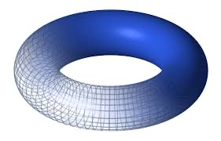
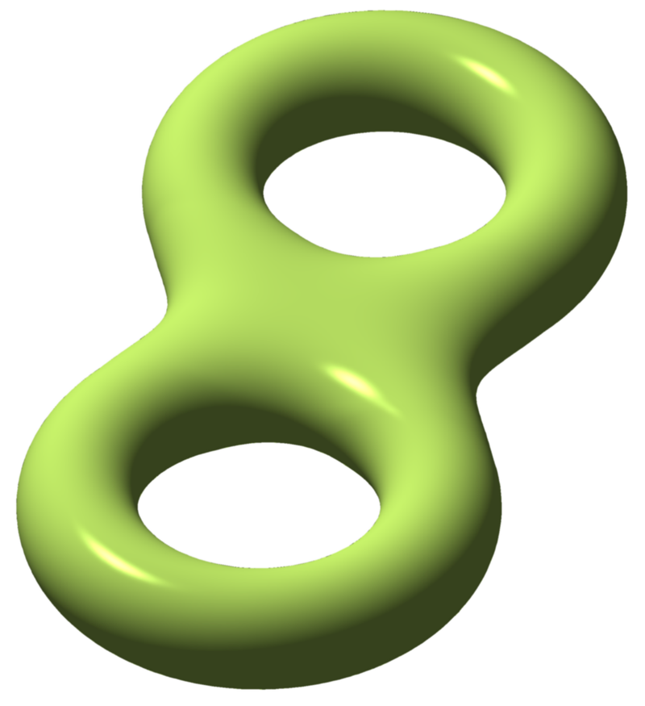

Introduction to topology
Topology (from the Greek words τόπος, 'place, location', and λόγος, 'study') is the branch of mathematics
concerned with
the properties of a geometric object that are preserved under continuous deformations, such
as stretching, twisting, crumpling,
and bending; that is, without closing holes, opening holes, tearing, gluing,
or passing through itself.
In topology, a circle is a simple closed curve with no intersections.
Expert Insight
This is Sir Michael Francis Atiyah, a British-Lebanese mathematician, talking about topology.
Common manifolds
| Manifold | Euler Number | Shape |
|---|---|---|
| Sphere | 2 | |
| Torus | 0 |  |
| 2-holed Torus | -2 |  |
Sphere eversion
In differential topology, sphere eversion is a theoretical process of turning a sphere inside out in a
three-dimensional space (the word eversion means "turning inside out").
It is possible to smoothly and
continuously turn a sphere inside out in this way (allowing self-intersections of the sphere's surface)
without cutting or tearing it or creating any crease.
This is surprising, both to non-mathematicians and
to those who understand regular homotopy, and can be regarded as a veridical paradox; that is something
that, while being true, on first
glance seems false.
While eversing the sphere, a half-way model is obtained, called a Morin surface.